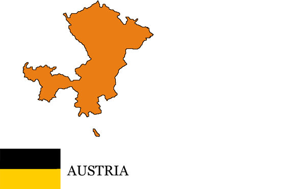
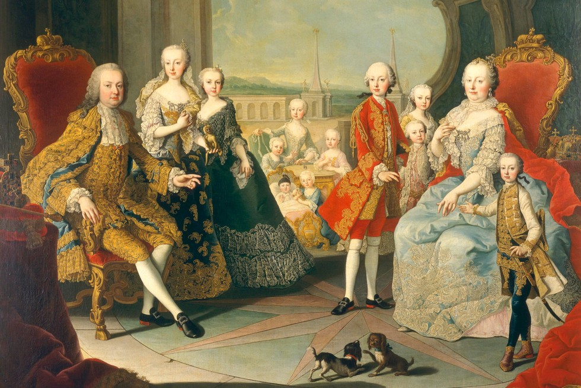
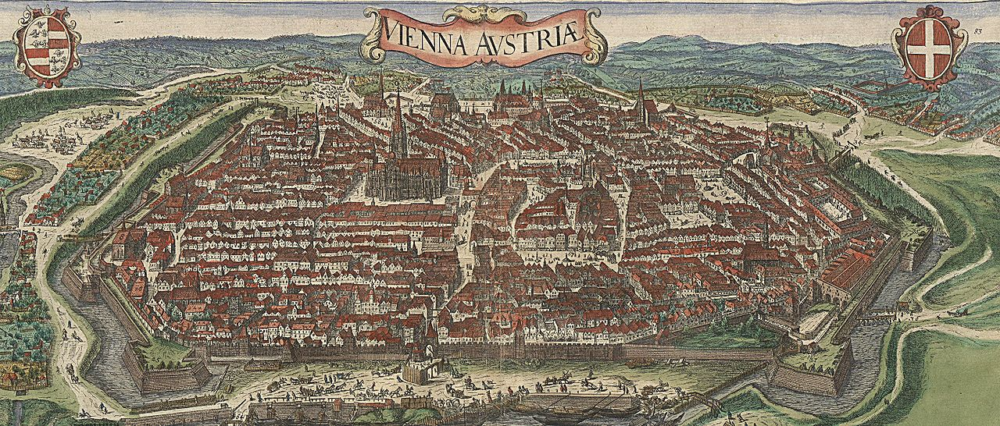
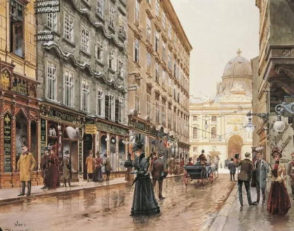

Austrian History
Austria has a rich and fascinating history that stretches back thousands of years. From the earliest Celtic settlements along the Danube to the Roman occupation and beyond, this region has long been a crossroads of European civilizations. Archaeological evidence reveals thriving communities that traded with neighboring regions, built sophisticated infrastructure, and laid the foundation for what would become modern Austria. As the Roman Empire expanded, important towns and fortifications were established, leaving a lasting imprint on local culture, language, and architecture. The fall of the Roman Empire brought waves of migration and transformation, yet Austria remained a vital link between Eastern and Western Europe, setting the stage for the rise of influential dynasties such as the Babenbergs and, later, the Habsburgs, who would dominate the region for centuries.

During the Middle Ages, Austria evolved into a powerful duchy within the Holy Roman Empire, gradually asserting political influence over Central Europe. The Habsburg family, whose members would later become some of the most prominent rulers in European history, began consolidating territories and establishing dynastic marriages that strengthened their position. Architecture flourished during this time, with castles, monasteries, and cathedrals rising across the landscape. Trade networks expanded, connecting Austrian towns to major European markets, while the population grew steadily. Cultural life also blossomed: local craftsmen, artists, and scholars contributed to a rich intellectual environment. Austria’s strategic location made it both a center of opportunity and a battleground for competing powers, with wars and diplomacy shaping the duchy’s boundaries, governance, and identity over centuries.

In the 16th and 17th centuries, Austria consolidated its power further and became a central player in European diplomacy. Vienna, in particular, emerged as a hub of political negotiation, artistic innovation, and scientific inquiry. The city attracted musicians, composers, architects, and intellectuals, transforming it into one of Europe’s cultural capitals. Meanwhile, Austria faced challenges such as religious conflicts, Ottoman invasions, and internal political reforms, which tested the resilience and adaptability of its rulers. Despite these trials, Austria’s society advanced through the development of education, law, and urban infrastructure. The Habsburg court sponsored monumental artistic works, fostering music by composers like Haydn and later Mozart, and establishing traditions of courtly ceremony, literature, and scholarly pursuits that would influence European culture for generations.

In the 19th century, Austria became a central part of the Austro-Hungarian Empire, a major power that wielded significant political, economic, and cultural influence in Europe. Vienna, the imperial capital, blossomed as a center of intellectual life, music, and the arts. Architects designed grand boulevards and palaces, reflecting the empire’s wealth and sophistication. During this period, Austria grappled with political upheaval, including nationalist movements, revolutions, and debates about governance, while still maintaining its imperial identity. Social and economic reforms slowly modernized the country, improving education, industry, and infrastructure. Cultural life thrived: composers like Strauss transformed music, painters and writers explored new artistic styles, and Vienna’s coffeehouse culture became legendary, fostering debates and the exchange of ideas among citizens and scholars alike.

After World War I, the Austro-Hungarian Empire dissolved, and Austria declared itself a republic. The interwar years brought economic hardship, political instability, and social change, yet the nation’s cultural identity remained strong. During World War II, Austria experienced occupation and the challenges of rebuilding once again. In the post-war era, Austria emerged as a neutral and prosperous country, focusing on political stability, economic development, and cultural preservation. The historic palaces, museums, and cathedrals were carefully restored, while new institutions and civic programs promoted education, the arts, and public engagement. This period solidified Austria’s reputation as a country that values both its rich historical legacy and modern innovation.

Today, Austria is a nation where history and modernity coexist harmoniously. Imperial palaces and baroque streets blend seamlessly with contemporary architecture, art, and scientific institutions. The country celebrates its musical and cultural traditions while also embracing technology, education, and global collaboration. Vienna continues to host world-class concerts, exhibitions, and academic conferences, reflecting Austria’s ongoing influence in European and international affairs. Across the country, historic towns, scenic landscapes, and cultural landmarks draw visitors from around the world, highlighting Austria’s ability to preserve its past while moving confidently into the future. Its citizens take pride in a vibrant national identity that honors centuries of achievement in politics, arts, science, and society.